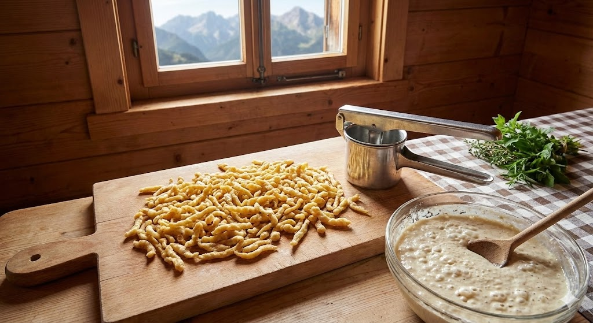

Spätzle & Knöpfle: Das Gold der Alpen
Während Italien Pasta trocknet, wirft der Alpenraum den Teig direkt ins kochende Wasser. Es ist eine Küche der Frische, der Eier und der Improvisation.
1. Zäh muss er sein: Die Physik
Ein Spätzleteig ist weder flüssig (wie Crêpes) noch fest (wie Nudelteig). Er liegt dazwischen – er ist viskos.
Die Formel lautet: 1 Ei auf 100g Mehl. Das Ei ist hier das entscheidende Bindemittel. Es gerinnt im heißen Wasser sofort und gibt der Spätzle ihre Struktur.
Warum "Spätzlemehl" (Dunst)?
Profis nutzen kein feines 405er Mehl, sondern "Dunst" oder "doppelgriffiges Mehl".
Der Grund: Die gröberen Mehlpartikel nehmen Wasser langsamer auf. Das verhindert, dass der Teig sofort "verschleimt" und klebrig wird. Die Spätzle bekommen dadurch einen besseren "Biss" (Kern) und lassen sich sauberer schaben.
2. Schaben, Hobeln, Pressen
Die Form der Spätzle erzählt, welches Werkzeug benutzt wurde.
Handgeschabt (Die Königsdisziplin)
Der Teig wird auf einem nassen Holzbrett dünn ausgestrichen. Mit einem Schaber wird blitzschnell ein Streifen Teig ins Wasser geschleudert.
Ergebnis: Unregelmäßige Formen, dünne Enden, dicker Bauch. Soße haftet perfekt.
Gepresst / Gehobelt
Schwaben nutzen oft die Presse (lange Fäden wie Spaghetti). Schweizer und Allgäuer nutzen den Hobel (kurze Tropfen = Knöpfle).
Ergebnis: Gleichmäßig, glatter, oft fester im Biss.
3. Die Familie: Spätzle, Knöpfle & Co. (10 Varianten)
Vom Schwabenland bis Ungarn gibt es viele Varianten dieses "gekochten Teigs".
4. Der Mythos Kässpätzle
Kässpätzle (oder "Kässpatzen") sind mehr als nur Nudeln mit Käse. Es ist eine Emulsion.
Traditionell werden Spätzle und geriebener Bergkäse (Emmentaler, Bergkäse, Weißlacker) geschichtet. Wichtig ist das Kochwasser: Ein Löffel davon sorgt dafür, dass der Käse cremig schmilzt und nicht nur fettig ausölt. Gekrönt wird alles von "Schmelzzwiebeln" – langsam in Butter karamellisierten Zwiebelringen.